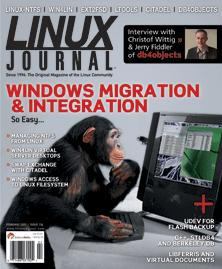

Shutdown Archive web server
Search:
Linux Journal
Issue #154/February 2007

Features
The Interoperability Power of Linux-NTFS Tools
by Steven Mathes
Linux does NTFS better than you think.
Break the Hardware Upgrade Cycle with Win4Lin Windows Virtual Server
by Jon Watson
Windows on many Linux clients.
Accessing Linux Filesystems in Windows
by Irfan Habib
How do you reach Linux filesystems from Windows?
The Citadel Groupware Server
by Jon Watson
Replace Microsoft Exchange.
Indepth
Tech Tips with Gnull and Voyd
by Chester Gnull and Laverta Voyd
Interview with Christof Wittig and Jerry Fiddler of db4objects
by Nicholas Petreley
Company and community overlap.
Virtual Filesystems Are Virtual Office Documents
by Ben Martin
Are libferris features virtually inexhaustable?
Simple Access Berkeley DB Using STLdb4
by Ben Martin
Tired of the thin C++ wrapper for Berkeley DB?
Creating SELinux Policies Simplified
by Irfan Habib
SELinux is easier than you think.
Integrating PHP and Perl
by Irfan Habib
PHP or Perl? You don't have to decide.
Painless Thumbdrive Backups
by Andrew Fabbro
UDEV makes Flash backups easy
Columns
Reuven M. Lerner's At the Forge
Scriptaculous
Marcel Gagné's Cooking with Linux
Words, Words, Words...
Dave Taylor's Work the Shell
Analysing Your Search Keywords
Mick Bauer's Paranoid Penguin
Introduction to SELinux
by Mick Bauer
Jon “maddog” Hall's Beachhead
Beneath the Surface
Doc Searls' Linux for Suits
Migrating a Mentality
Nicholas Petreley's /var/opinion
Long Live the Freedom of Linux
In Every Issue
Letters
upFRONT
New Products
Archive Index
Shutdown Archive web server
Search:
Copyright © 1994 - 2018
Linux Journal
. All rights reserved.